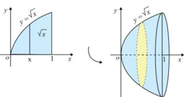
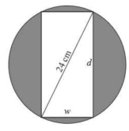
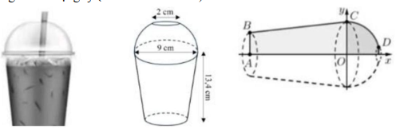

ĐỀ THI TOÁN - ĐỀ SỐ 62 HOT
Phần I: Trắc Nghiệm Nhiều Lựa Chọn
Tóm tắt kiến thức: Vector pháp tuyến
Vector pháp tuyến của mặt phẳng \( ax + by + cz + d = 0 \) là \( \vec{n} = (a; b; c) \).
Câu 1:
Trong không gian \( Oxyz \), cho mặt phẳng \( (\alpha): 2x - y + 3z + 5 = 0 \). Vector nào dưới đây là một vector pháp tuyến của \( (\alpha) \)?
Chọn đáp án:
Tóm tắt kiến thức: Cực trị của hàm số
Điểm cực trị xảy ra khi \( f'(x) = 0 \), và dấu của \( f'(x) \) thay đổi (từ dương sang âm: cực đại; từ âm sang dương: cực tiểu).
Câu 2:
Cho hàm số \( y = f(x) \) liên tục trên \( [-3; 3] \) và có bảng xét dấu của đạo hàm như hình bên dưới:
| \( x \) | -3 | -1 | 0 | 1 | 2 | 3 |
|---|---|---|---|---|---|---|
| \( f'(x) \) | + | 0 | - | - | 0 | - |
Mệnh đề nào sau đây sai?
Chọn đáp án:
Tóm tắt kiến thức: Tập xác định của hàm mũ
Hàm số \( y = a^x \) xác định với mọi \( x \in \mathbb{R} \), nên tập xác định là \( \mathbb{R} \).
Câu 3:
Tập xác định của hàm số \( y = 2^x \) là
Chọn đáp án:
Tóm tắt kiến thức: Cấp số cộng
Trong cấp số cộng, \( u_n = u_1 + (n-1)d \). Công sai \( d = \frac{u_n - u_1}{n-1} \).
Câu 4:
Cho cấp số cộng \( (u_n) \) có \( u_1 = -3 \), \( u_6 = 27 \). Tìm công sai \( d \) của \( (u_n) \).
Chọn đáp án:
Tóm tắt kiến thức: Thể tích hình chóp
Thể tích hình chóp: \( V = \frac{1}{3} \cdot S_{\text{đáy}} \cdot h \), với \( h \) là chiều cao từ đỉnh đến mặt phẳng đáy.
Câu 5:
Cho hình chóp tứ giác \( S.ABCD \) có đáy \( ABCD \) là hình vuông cạnh \( a \), \( SA \perp (ABCD) \), \( SA = 3a \). Thể tích \( V \) của hình chóp \( S.ABCD \) là
Chọn đáp án:
Tóm tắt kiến thức: Nguyên hàm của hàm lượng giác
Nguyên hàm: \( \int \cos kx \, dx = \frac{1}{k} \sin kx + C \).
Câu 6:
Nguyên hàm \( \int \cos 2x \, dx \) bằng
Chọn đáp án:
Tóm tắt kiến thức: Tiệm cận của hàm phân thức
Tiệm cận đứng tại \( x = a \) nếu mẫu số bằng 0 tại \( x = a \). Tiệm cận ngang \( y = b \) nếu \( \lim_{x \to \pm \infty} f(x) = b \).
Câu 7:
Đồ thị của hàm số nào sau đây có tiệm cận đứng là đường thẳng \( x = 1 \) và tiệm cận ngang là đường thẳng \( y = -2 \)?
Chọn đáp án:
Tóm tắt kiến thức: Bất phương trình logarit
Đối với \( \log_a (f(x)) > b \) với \( 0 < a < 1 \), ta có \( f(x) < a^b \), kèm điều kiện \( f(x) > 0 \).
Câu 8:
Tập nghiệm của bất phương trình \( \log_{\frac{1}{2}}(x+2) > -1 \) là
Chọn đáp án:
Tóm tắt kiến thức: Thể tích khối tròn xoay
Thể tích khối tròn xoay quanh trục \( Ox \): \( V = \pi \int_a^b [f(x)]^2 \, dx \).
Câu 9:
Tính thể tích khối tròn xoay sinh ra khi quay quanh trục \( Ox \) hình phẳng giới hạn bởi đồ thị hàm số \( y = \sqrt{x} \), trục hoành và hai đường thẳng \( x = 0 \), \( x = 1 \) (xem hình vẽ).

Chọn đáp án:
Tóm tắt kiến thức: Vector trong hình lăng trụ
Vector được biểu diễn qua các vector cơ bản, tính toán dựa trên tọa độ các điểm.
Câu 10:
Cho hình lăng trụ \( ABC.A'B'C' \). Gọi \( M \) là trung điểm của cạnh \( BB' \). Đặt \( \overrightarrow{CA} = \vec{a} \), \( \overrightarrow{CB} = \vec{b} \), \( \overrightarrow{AA'} = \vec{c} \). Khẳng định nào dưới đây đúng?
Chọn đáp án:
Tóm tắt kiến thức: Phương trình mặt cầu
Mặt cầu có đường kính \( AB \): Tâm là trung điểm \( I \) của \( AB \), bán kính \( R = \frac{AB}{2} \).
Câu 11:
Trong không gian với hệ trục tọa độ \( Oxyz \), cho hai điểm \( A(1; -2; 3) \) và \( B(5; 4; 7) \). Phương trình mặt cầu nhận \( AB \) làm đường kính là
Chọn đáp án:
Tóm tắt kiến thức: Tứ phân vị
Tứ phân vị \( Q_k \) được tính bằng công thức: \( Q_k = u_j + \frac{\frac{k \cdot n}{4} - C}{n_j} \cdot (u_{j+1} - u_j) \), với \( C \) là tần số tích lũy.
Câu 12:
Một bệnh viện thống kê chiều отношение cao của 50 trẻ sơ sinh 12 ngày tuổi một cách ngẫu nhiên. Kết quả thu được như sau:
| Chiều cao (cm) | \([40; 42)\) | \([42; 44)\) | \([44; 46)\) | \([46; 48)\) | \([48; 50)\) | \([50; 52)\) | \([52; 54)\) |
|---|---|---|---|---|---|---|---|
| Tần số | 4 | 4 | 5 | 10 | 14 | 8 | 5 |
Bộ giá trị nào sau đây là tứ phân vị của mẫu số liệu ghép nhóm trên?
Chọn đáp án:
Phần II: Trắc Nghiệm Đúng/Sai
Tóm tắt kiến thức: Xác suất
Xác suất: \( P(A) = \frac{\text{số trường hợp thuận lợi}}{\text{tổng số trường hợp}} \). Xác suất có điều kiện: \( P(A|B) = \frac{P(A \cap B)}{P(B)} \).
Câu 13:
Khảo sát 100 người, trong đó có 49 nam và 51 nữ, về việc có nuôi thú cưng hay không, kết quả được ghi lại trong bảng sau:
| Có nuôi thú cưng | Không có thú cưng | Tổng | |
|---|---|---|---|
| Nam | 41 | 8 | 49 |
| Nữ | 45 | 6 | 51 |
| Tổng | 86 | 14 | 100 |
Chọn ngẫu nhiên một người trong số người được khảo sát. Xét các phát biểu sau:
Chọn đáp án cho từng phát biểu:
a)
b)
c)
d)
Tóm tắt kiến thức: Chuyển động và khoảng cách
Vector vị trí và khoảng cách được tính dựa trên phương trình tham số và tối ưu hóa hàm số.
Câu 14:
Trong không gian với hệ tọa độ \( Oxyz \), một cabin cáp treo xuất phát từ điểm \( A(-20; 12; 0) \), chuyển động thẳng đều theo đường cáp và cùng chiều với vector \( \vec{u} = (2; -2; 1) \) với tốc độ \( 6 \, \text{m/s} \) (đơn vị trên mỗi trục tọa độ là mét). Giả sử sau \( t \) giây kể từ lúc xuất phát (\( t \geq 0 \)), cabin đến điểm \( M \). Xét các phát biểu sau:
Chọn đáp án cho từng phát biểu:
a)
b)
c)
d)
Tóm tắt kiến thức: Tối ưu hóa hàm số
Độ cứng tỉ lệ thuận với \( w \cdot d^2 \). Sử dụng định lý Pythagore để liên hệ \( d \) và \( w \), sau đó tối ưu hóa hàm số.
Câu 15:
Độ cứng \( S \) của một thanh gỗ hình chữ nhật tỉ lệ thuận với tích của chiều rộng \( w \) và bình phương chiều dài \( d \) của nó (theo đơn vị cm). Biết rằng nếu thanh gỗ có chiều dài \( 6 \, \text{cm} \), chiều rộng \( 3 \, \text{cm} \) thì độ cứng bằng 108. Một khúc gỗ hình tròn có đường kính \( 24 \, \text{cm} \), người ta cắt thành một thanh gỗ hình chữ nhật như hình vẽ sau:

Xét các mệnh đề sau:
Chọn đáp án cho từng phát biểu:
a)
b)
c)
d)
Tóm tắt kiến thức: Thể tích khối nón cụt và mặt cầu
Thể tích khối nón cụt: \( V = \pi \int_a^b [f(x)]^2 \, dx \). Thể tích nửa mặt cầu: Tích phân theo mặt phẳng cắt.
Câu 16:
Một ly trà sữa dạng hình nón cụt, có đường kính đáy ly là \( 6 \, \text{cm} \), đường kính miệng ly là \( 9 \, \text{cm} \), chiều cao \( 13,4 \, \text{cm} \). Ở miệng ly có sử dụng một nắp có hình dạng nửa mặt cầu và ở đỉnh của nửa mặt cầu này có một hình tròn có đường kính \( 2 \, \text{cm} \) để cắm ống hút, mặt phẳng chứa hình tròn này song song với mặt phẳng chứa miệng ly (tham khảo hình vẽ).

Chọn hệ trục \( Oxy \) (đơn vị trên trục là cm) với trục \( Ox \) đi qua tâm của hai đáy hình nón cụt và gốc tọa độ \( O \) trùng với tâm của đáy lớn như hình vẽ. Xét các phát biểu sau:
Chọn đáp án cho từng phát biểu:
a)
b)
c)
d)
Phần III: Trắc Nghiệm Trả Lời Ngắn
Tóm tắt kiến thức: Góc giữa hai đường thẳng
Cosin góc giữa hai đường thẳng: \( \cos \varphi = \frac{|\vec{u} \cdot \vec{v}|}{|\vec{u}| \cdot |\vec{v}|} \), với \( \vec{u}, \vec{v} \) là vector chỉ phương.
Câu 17:
Cho hình chóp \( S.ABCD \) có đáy \( ABCD \) là hình vuông cạnh bằng 2, \( SA \) vuông góc với mặt phẳng đáy và \( SA = 1 \). Gọi \( M, N \) lần lượt là trung điểm của \( SA, CD \). Cosin của góc giữa hai đường thẳng \( MN \) và \( SC \) bằng bao nhiêu? (làm tròn kết quả đến hàng phần trăm).

Nhập đáp án:
Tóm tắt kiến thức: Xác suất có điều kiện
Xác suất có điều kiện: \( P(A|B) = \frac{P(A \cap B)}{P(B)} \). Không gian mẫu của hai xúc xắc: \( 36 \).
Câu 18:
Gieo hai con xúc xắc cân đối và đồng chất. Tính xác suất để tổng số chấm xuất hiện trên hai con xúc xắc không nhỏ hơn 10, biết rằng ít nhất một con xúc xắc xuất hiện mặt 5 chấm (làm tròn kết quả đến hàng phần trăm).
Nhập đáp án:
Tóm tắt kiến thức: Tối ưu hóa chi phí
Tối ưu hóa chi phí bằng cách xét hàm chi phí và tìm cực trị thông qua đạo hàm.
Câu 19:
Chủ của một nhà hàng muốn làm tường rào bao quanh \( 600 \, \text{m}^2 \) đất để làm bãi đỗ xe. Ba cạnh của khu đất sẽ được rào bằng một loại thép với chi phí \( 14.000 \, \text{đồng/mét} \), riêng cạnh thứ tư do tiếp giáp với một bên của nhà hàng nên được xây bằng tường gạch xi măng với chi phí \( 28.000 \, \text{đồng/mét} \). Biết rằng cổng vào của khu đỗ xe dài \( 5 \, \text{m} \). Tìm chu vi của khu đất khi phí nguyên liệu bỏ ra là ít nhất, biết rằng khu đất rào được có dạng hình chữ nhật.
Nhập đáp án:
Tóm tắt kiến thức: Tổ hợp
Số cách chia quà được tính bằng tổ hợp, đảm bảo điều kiện mỗi học sinh nhận hai sách khác môn.
Câu 20:
Trong lễ tổng kết năm học 2021-2022, lớp 10A1 nhận được 20 cuốn sách gồm 5 cuốn sách Toán, 7 cuốn sách Vật lý, 8 cuốn sách Hóa học, các sách cùng môn là giống nhau. Số sách này được chia đều cho 10 học sinh trong lớp, mỗi học sinh chỉ nhận được hai cuốn sách khác môn học. Bình và Bảo là hai trong số các học sinh. Tìm số cách chia phần quà sao cho hai cuốn sách mà Bình nhận được giống hai cuốn sách của Bảo.
Nhập đáp án:
Tóm tắt kiến thức: Khoảng cách giữa đường thẳng
Đường thẳng vuông góc với một đường và cắt hai đường khác tại \( H, K \) sao cho \( HK \) nhỏ nhất, sử dụng vector chỉ phương và điều kiện vuông góc.
Câu 21:
Trong không gian \( Oxyz \), cho ba đường thẳng \( d: \frac{x}{1} = \frac{y}{1} = \frac{z+1}{-2} \), \( \Delta_1: \frac{x-3}{2} = \frac{y}{1} = \frac{z-1}{1} \), và \( \Delta_2: \frac{x-1}{1} = \frac{y-2}{2} = \frac{z}{1} \). Đường thẳng \( \Delta \) vuông góc với \( d \) đồng thời cắt \( \Delta_1, \Delta_2 \) tương ứng tại \( H, K \) sao cho độ dài \( HK \) nhỏ nhất. Biết rằng \( \Delta \) có một vector chỉ phương là \( \vec{u} = (h; k; 5) \). Giá trị của \( h^2 + k^2 \) bằng bao nhiêu?
Nhập đáp án:
Tóm tắt kiến thức: Thể tích khối tròn xoay
Thể tích khối tròn xoay: \( V = \pi \int_a^b [f(y)]^2 \, dy \). Tính toán dựa trên các đường tròn giao nhau.
Câu 22:
Một người thiết kế mô hình một cái đèn ngủ bằng nhựa có hình dạng như hình vẽ 3D ở hình 1. Hình 2 là mặt cắt bởi mặt phẳng cắt đi